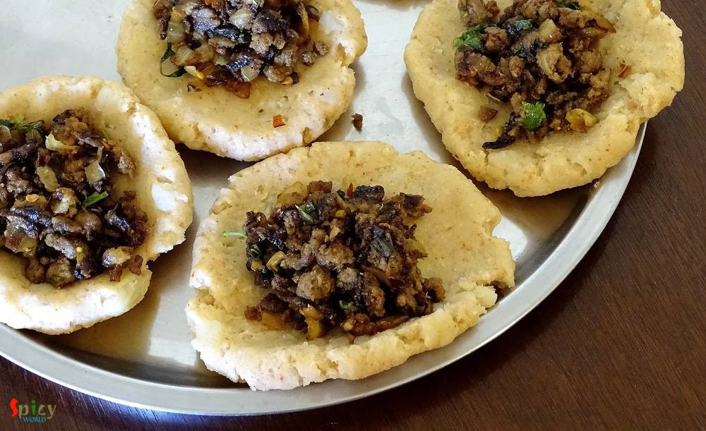
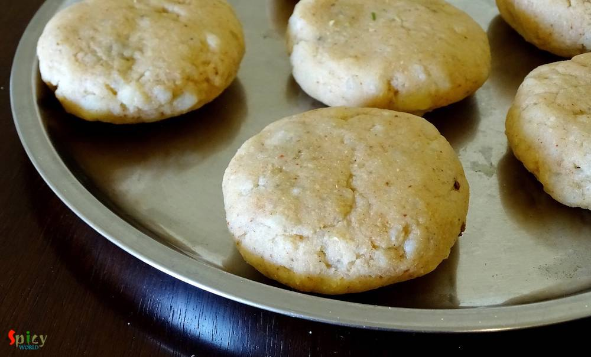

Simple and Easy Recipes
Mutton Keema stuffed Aloo Tikki / Minced Mutton stuffed Potato Fritters
© 2016 Spicy World, Published on: Mar 28, 2016
Obviously they are not our regular 'aloor chop' / aloo tikki, they are something very special, aloo tikkis are stuffed with spicy minced meat, a little different from usual, but they tastes million bucks !! We Bengalis generally eat 'aloor chop' with puffed rice or tea whereas in other parts of India 'aloo tikki' is always served with chutneys. I will recommend you the second one for these stuffed tikkis as it enhances the taste of the entire dish. Now the ingredients of the stuffing are entirely up to you. I have used minced meat, but you can also use chicken, paneer, fish, lentils etc. Believe me, every time they will taste better and better. Try this in your kitchen and enjoy these delicious tikkis with coke or a glass of beer.

Ingredients
- A cup of minced mutton.
- 1 Teaspoon of ginger and garlic paste.
- Half cup of chopped onion.
- Spice powder for stuffing (1 Teaspoon of turmeric powder, 1 Teaspoon of red chilli powder, 1 Teaspoon of roasted coriander powder and 1 Teaspoon of garam masala)
- Some chopped coriander leaves.
- Salt.
- 3 boiled potatoes.
- 2 Tablespoons of cornflour.
- 2 bread, soaked in water.
- Spice powder for tikki (1 Tablespoon of red chilli powder, 1 Teaspoon of amchoor / dry mango powder, 1 Tablespoon of garam masala)
- Half cup of oil.
- Half Teaspoon of chat masala.


Steps
Heat a Teaspoon of oil in a pan.
Add chopped onion, fry till they become golden in color. Add ginger and garlic paste. Cook for 2 - 3 minutes.
Then add the minced mutton with some salt. Cook for 10 minutes.
Then add all the mentioned spice powder. Mix well for 5 minutes more.
Lastly add chopped coriander leaves and turn off the heat.
Now the stuffing is ready.
Mash the boiled potato very well, like a smooth potato paste.
Then add the cornflour, salt and all the mentioned spice powder.
Add the soaked bread and again mix very well.
You can also add some soaked poha / flattened rice into the potato mixture.
Make lemon size balls out of the mixture.
Flatten the balls gently with your fingers and place a Teaspoon of that cooked stuffing into the center.
Now bring the edges to the center very gently, seal it properly and flatten it a bit.
Heat half cup of oil in a frying pan and fry the tikkis in medium heat till golden in color.
After that remove them from oil and keep them on paper tissue to absorb extra oil.
Lastly sprinkle some chopped onion and chat masala over them.
Your mutton keema stuffed aloo tikkis are ready ...
Enjoy this hot with some chutneys ...
")